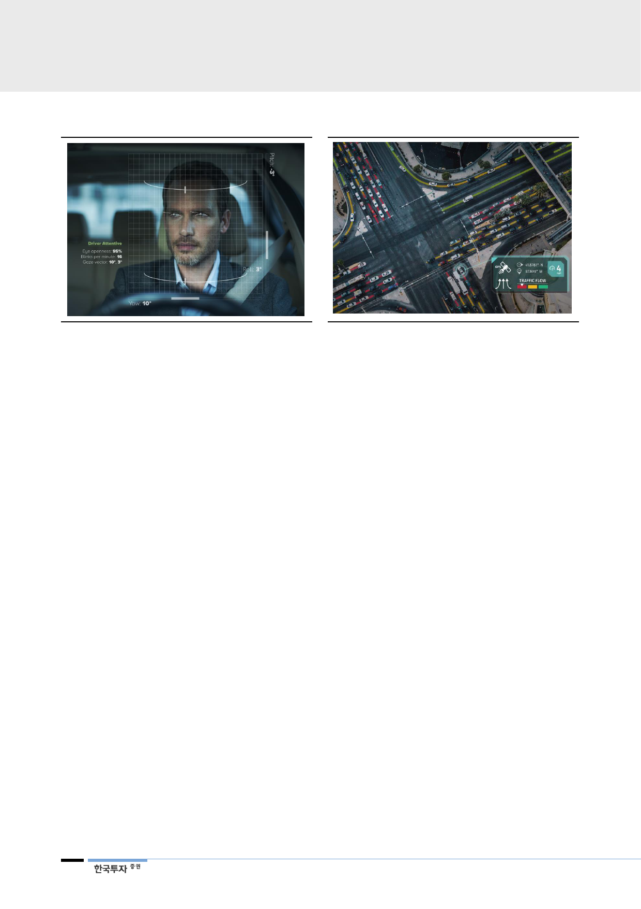

[그림 33] 인포테인먼트 운전자 감지 시스템
[그림 34] 텔레매틱스 도로정보 시스템
자료: Eyesight, 한국투자증권
전장부품: Bolt에서 시작,
Bolt 판매량은 증가하고
새로운 고객사도 확보
가전 부문에서
모터, 공조 등의 경쟁력이
전장부품까지 이어져
자료: Here, 한국투자증권
LG전자의 전장부품은 대부분 GM의 Bolt에 납품된다. 클러스터를 포함해 구동모
터, 인버터, 배터리셀 등 11개의 핵심부품이 들어간다. 2016년 출시된 Bolt는 주
행거리가 380km로 다른 전기차대비 주행거리가 길다(2016년 출시된 전기차 평
균 주행거리 약 220km). 짧은 주행거리는 전기차의 시장 확대를 제한하는 요소
였는데, Bolt는 합리적인 가격(40,000달러 이하)에서 장거리 주행이 가능한 전기
차 시장을 열었다는 평을 받는다.
Bolt는 지난해 2.6만대가 공급됐는데 올해는 최소 3만대가 공급될 예정이다. 볼
트의 올해 2분기 판매 대수는 전년 동기대비 약 30% 증가했고, 상반기 기준으로
는 약 40% 증가했다. 미국 판매량이 부진해 보였지만 이는 공급이 제한된 상태
에서 글로벌 수요 균형을 맞추기 위해 미국 이외 지역으로 공급을 늘렸기 때문이
다. Bolt는 주력 시장인 미국, 한국, 캐나다에서 지속적으로 초과 수요가 발생하고
있다. 언론에 따르면 캐나다의 경우 주문을 하고 실제로 자동차를 수령하기 위해
선 1년을 대기해야 한다. 한국도 비슷한 상황이다. 현재 전기차는 정부의 내연기
관 규제와 전기차 보조금 제도, 충전 인프라 구축 등이 이뤄지고 있어 성장의 방
향성이 명확한 시장이다.
LG전자가 GM의 기존 협력사를 제치고 핵심 부품을 공급할 수 있었던 것은 Bolt
가 순수 전기차이고, LG전자가 가전부문에서 쌓아온 기술력 덕분이다. 전기차의
성능을 결정짓는 중요한 요소는 주행거리인데, 주행거리를 늘리기 위해서는 제한
된 배터리 용량에서 전력 소비를 최소화하는 동시에 높은 효율을 내야 한다. 대형
가전용(냉장고, 세탁기) 부품에서 전력 효율을 높이는 경험을 쌓아온 LG전자의
강점이 부각됐다. 특히 전기차는 내연기관의 엔진역할을 하는 구동모터가 핵심부
품 중 하나인데 LG전자의 모터 기술은 개발단계부터 진행해야 하는 경쟁업체 대
비 우위에 있다. Bolt가 가진 지위와 LG전자의 시장에서의 성공적인 데뷔는 경쟁
력 있는 레퍼런스가 되어 향후 고객사 다변화, 공급 확대 가능성을 높일 것이다.
20